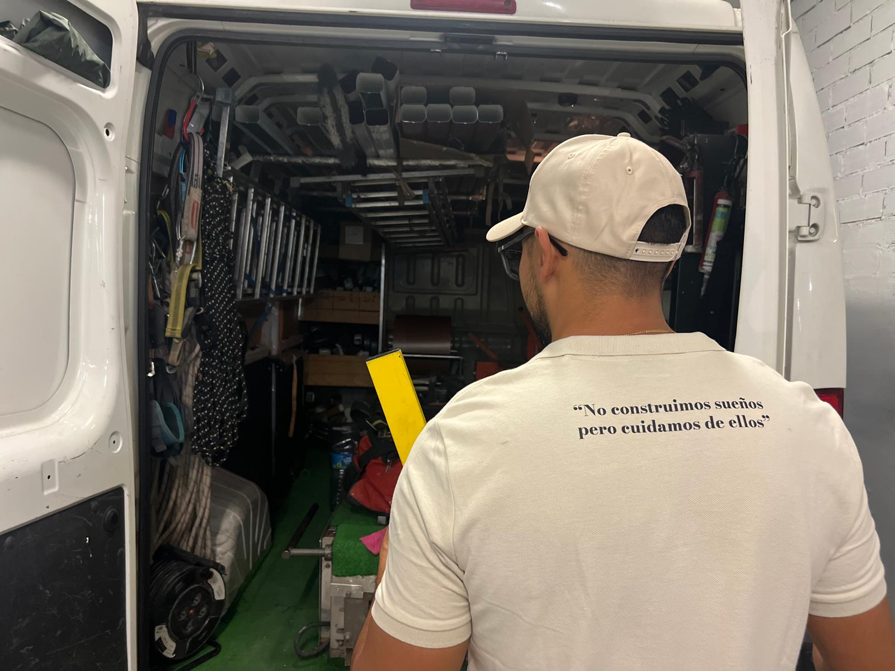

En JR Canalones Pluviales
Tenemos más de 10 años de experiencia, especializados en la instalación, fabricación y mantenimiento
de canalones, garantizando calidad en nuestros servicios.
Nuestros valores es servir a la comunidad de una forma más justa para todas las partes involucradas.

Nuestro proceso
JR Canalones Pluviales nace de entablecer una relación más directa con el cliente, trayendo consigo un beneficio mutuo, una rapidez en la gestión de incidencias y la personalización de nuestro trabajo a la demanda de nuestros clientes.

Instalación
Contamos con un equipo humano muy cualificado en instalar canalones, colocar bajantes, plegados de aluminio y canaletas laterales.

fabricación
Contamos con tecnología de primera para fabricar canalones de aluminio lacado en diversos colores a medida de la fachada,
mantenimiento
Para mayor confort ofrecemos servicios de mantenimiento, limpieza, sustitución y reparación de canales, bajantes.

cubremuros
Fabricamos e instalamos cubremuros en aluminio lacado en diversos colores a medida de la fachada, sin empalmes, juntas, en tramos continuos.

Garantia de calidad
Utilizamos materiales duraderos y técnicas avanzadas para asegurar que nuestros canalones no solo cumplan,
sino que superen las expectativas de nuestros clientes. Cada instalación está respaldada por nuestro sello de garantía,
que asegura un rendimiento óptimo y una larga vida útil.
Confíe en nosotros para proteger su hogar o negocio de las inclemencias del tiempo.
En JR Canalones Pluviales, su satisfacción es nuestra prioridad.